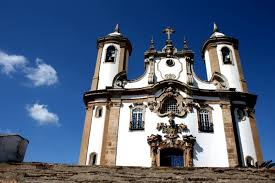
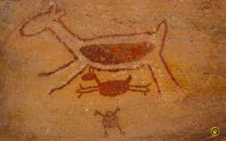
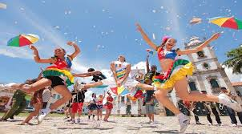
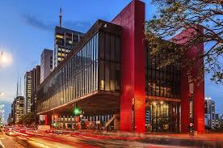
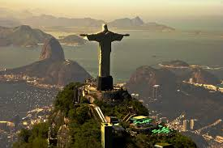
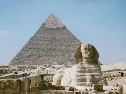

.jpeg)
ㅤ
O patrimônio cultural é um conjunto de bens materiais e imateriais que possuem significado e valor para uma determinada sociedade. No Brasil, o patrimônio cultural é protegido e preservado pelo Instituto do Patrimônio Histórico e Artístico Nacional (IPHAN). Esses bens podem ser de natureza arquitetônica, arqueológica, artística, documental, imaterial, entre outras.
No entanto, apesar dos esforços, o patrimônio cultural no Brasil ainda enfrenta desafios significativos. A falta de recursos financeiros, a degradação causada por ações humanas, o descaso e a falta de conscientização sobre a importância da preservação são alguns dos obstáculos enfrentados. A falta de infraestrutura adequada para a conservação, a falta de acesso a políticas de preservação e a pressão do desenvolvimento urbano também são questões relevantes.
O patrimônio cultural no Brasil é extremamente diversificado e reflete a riqueza histórica, arquitetônica, artística e imaterial do país. A preservação desse patrimônio desempenha um papel fundamental na valorização da identidade cultural brasileira, na promoção do turismo cultural e no fortalecimento das comunidades locais. É essencial que haja um contínuo investimento e conscientização sobre a importância desse legado para garantir sua proteção e transmissão para as futuras gerações.
No Brasil, o patrimônio cultural é extremamente diversificado, refletindo a rica história e a pluralidade cultural do país. Alguns exemplos notáveis são:
Engloba edificações, monumentos e conjuntos urbanos que possuem valor histórico ou estético, como o Centro Histórico de Ouro Preto, em Minas Gerais, e o Conjunto Arquitetônico da Pampulha, em Belo Horizonte.
ㅤ
Compreende sítios e vestígios deixados por povos que habitaram o território brasileiro no passado, como as pinturas rupestres da Serra da Capivara, no Piauí, e os sítios arqueológicos da região de Santarém, no Pará.
ㅤ
Envolve tradições, expressões, conhecimentos e práticas transmitidas de geração em geração, como o frevo, o samba de roda, o jongo e o artesanato de cerâmica de Caruaru.
ㅤ
Compreende acervos e documentos históricos relevantes para a memória e a pesquisa, como o Arquivo Nacional, no Rio de Janeiro, que guarda registros importantes da história do Brasil.
ㅤ
Inclui obras de arte, esculturas, pinturas e outros objetos de valor artístico, como o acervo do Museu de Arte de São Paulo (MASP) e do Museu Nacional de Belas Artes, no Rio de Janeiro.
No âmbito global, o patrimônio cultural assume características diversas, refletindo a multiplicidade de culturas existentes ao redor do mundo. Cada país possui seus próprios bens culturais, sendo alguns deles reconhecidos como Patrimônio Mundial pela UNESCO. Esses bens podem incluir desde monumentos e paisagens naturais até expressões culturais únicas.
A preservação e valorização do patrimônio cultural no mundo são fundamentais para a promoção da diversidade cultural, para o fortalecimento da identidade dos povos e para o desenvolvimento sustentável das comunidades. Organizações internacionais, como a UNESCO, desempenham um papel importante na proteção e promoção do patrimônio cultural global, incentivando a cooperação entre os países para a sua preservação e conscientização sobre sua importância. Ações de conservação, educação patrimonial e turismo cultural são realizadas em diferentes partes do mundo, visando a salvaguarda desse legado para as futuras gerações.
A educação patrimonial desempenha um papel fundamental na conscientização e envolvimento das comunidades locais e do público em geral. Através de programas educativos, exposições e atividades interativas, as pessoas são incentivadas a compreender, valorizar e respeitar seu patrimônio cultural. Além disso, o turismo cultural desempenha um papel importante na promoção do patrimônio cultural, contribuindo para o desenvolvimento econômico das comunidades locais e incentivando a preservação e a valorização dos bens culturais.
No entanto, o patrimônio cultural no mundo também enfrenta desafios. A urbanização descontrolada, a degradação ambiental, o tráfico ilícito de bens culturais, os conflitos armados e a falta de recursos financeiros são apenas alguns dos desafios que ameaçam a preservação do patrimônio cultural em várias regiões do mundo. É necessário um compromisso global para enfrentar esses desafios, promovendo políticas de proteção, cooperação internacional e conscientização sobre a importância do patrimônio cultural para a humanidade como um todo.
